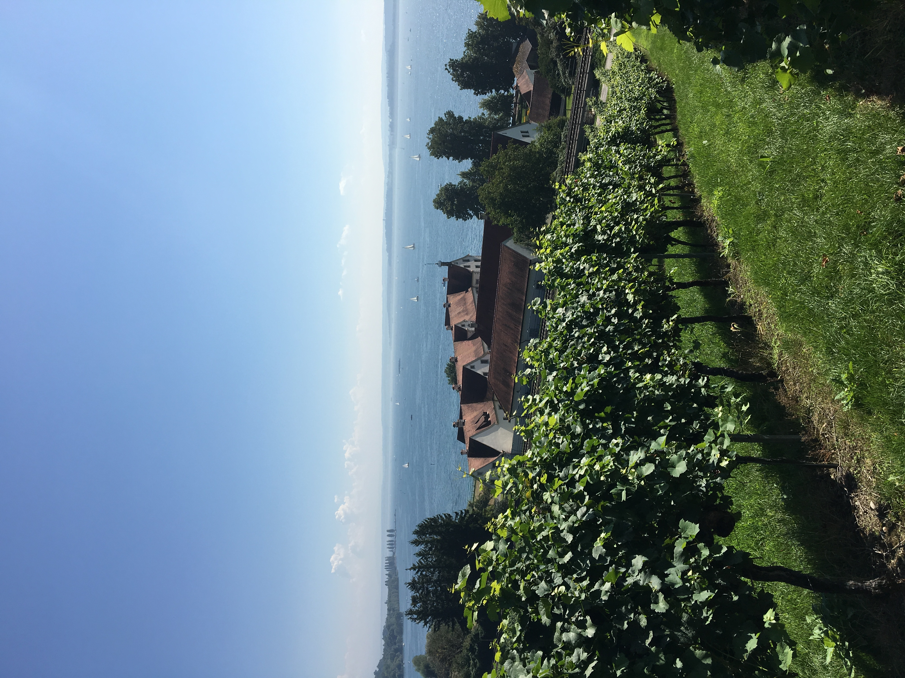

Dinge die ich mag:


Das sind meine liebsten Internetseiten:
Mein Traum ist es in Byron Bay, Australien für das Label "Spell & the Gypsy Collective" zu arbeiten.
Außerdem ist es mein Traum einmal ein Apartment in Sydney zu besitzen.
Hold on Darling. Hold onto the fire inside of you.
Hold onto falling in love, to serendipity and fate,
and all the magic this world is offering you.
Hold on to the way the light escapes through the trees
and the smell of the air in the spring.
To the touch of the wind.
Hold in to the colour of the sky in the morning,
before man wakes to spoil it. There is so much unexplored,
so much still for you to know. There is so much life for you to live.
For you to feel.
You have so much time left for dreaming, for laughing too much
and loving too hard. You still have so much to fight for.
To hold onto.
Wrap your hands around life and hold on.
Hold on darling. [...]
- Words by Sunday Lane